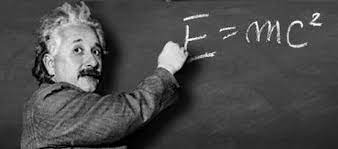
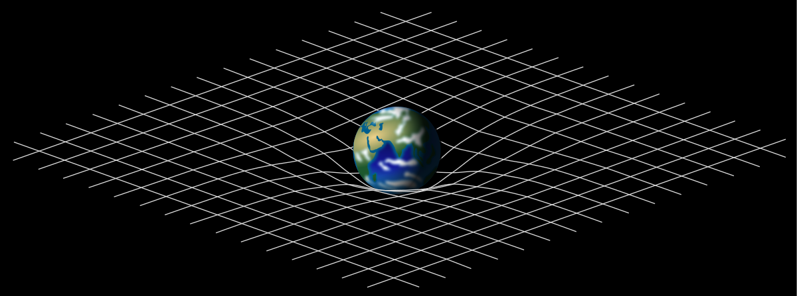
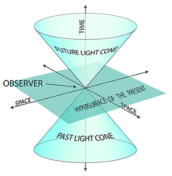
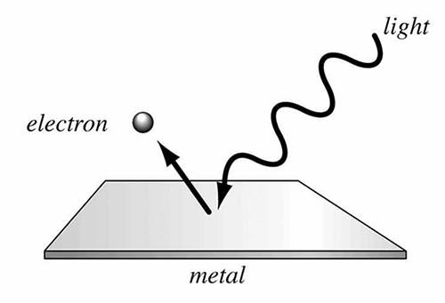

Let me show you some of my works
I was the first person to calculate the formula E=mc2
Photoelectric Effect is the emissions of electrons from a metal when light shines on it. Scientists were puzzled with this effect as it couldn’t be explained with Maxwell’s wave theory of light. In his revolutionary paper, released on June 9, 1905, I challenged the wave theory of light and suggested that light could also be regarded as a collection of discrete energy packets (photons). Initially my particle theory of light was universally rejected by physicists until it was experimentally verified by Robert A. Millikan about a decade later. My discovery was pivotal in establishing the field of quantum mechanics. Quantum mechanics in turn explained many features of our universe and is used a great deal in modern technological inventions.
I proposed the general theory of relativity
In 1916 I published his general theory of relativity, which generalizes special relativity and Newton’s law of universal gravitation, providing a unified description of gravity as a geometric property of space and time, or spacetime. General relativity helped to model the large-scale structure of the universe and its predictions have been confirmed in all observations and experiments to date. It has developed into an essential tool in modern astrophysics providing understanding of phenomena like black holes and gravitational lensing.
In addition to the general theory of relativity, I also proposed the special theroy of relativity
The inconsistencies of Newtonian mechanics with Maxwell’s equations of electromagnetism led me to write his legendary paper ‘On the Electrodynamics of Moving Bodies‘ which was published on September 26, 1905. My proposed major changes to mechanics while handling situations close to the speed of light. This later became known as Einstein’s special theory of relativity. It was supported by confirmatory experimental evidence and soon gained widespread acceptance. As of today, special relativity is the most accurate model of motion at any speed.
I solved the riddle of photoelectric effect
Photoelectric Effect is the emissions of electrons from a metal when light shines on it. Scientists were puzzled with this effect as it couldn’t be explained with Maxwell’s wave theory of light. In his revolutionary paper, released on June 9, 1905, I challenged the wave theory of light and suggested that light could also be regarded as a collection of discrete energy packets (photons). Initially my particle theory of light was universally rejected by physicists until it was experimentally verified by Robert A. Millikan about a decade later. My discovery was pivotal in establishing the field of quantum mechanics. Quantum mechanics in turn explained many features of our universe and is used a great deal in modern technological inventions.